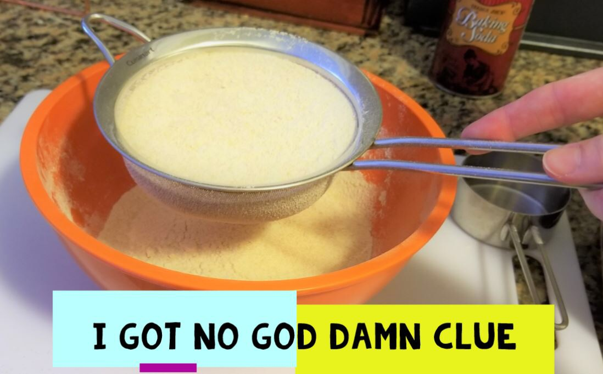
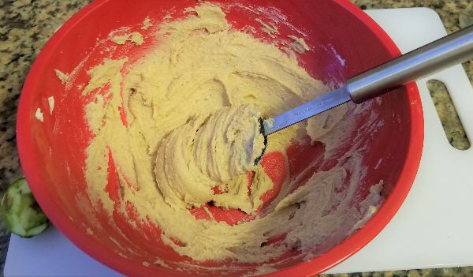
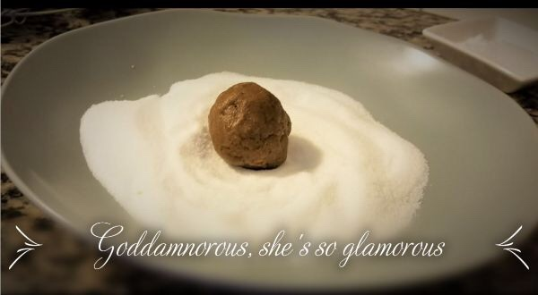
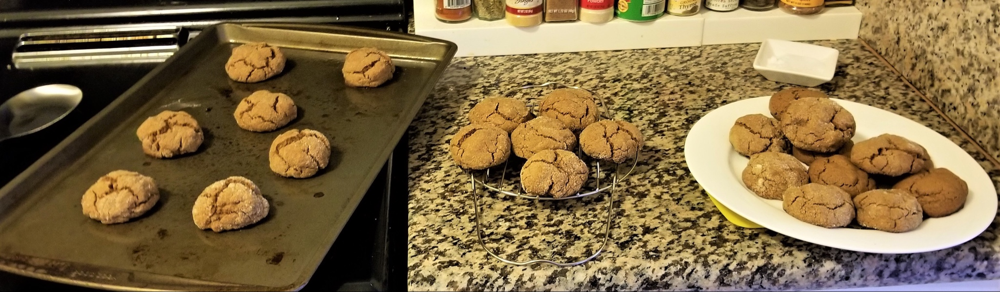

Ingredients
Cookies
1 tsp baking soda
1½ tsp ground cinnamon
1½ tsp ground ginger
½ tsp ground cloves
¼ tsp ground allspice
¼ tsp ground black pepper
¼ tsp salt
2½ c flour
12 tbsp Butter
⅓ c granulated sugar
⅓ c brown sugar
zest of 1 lime
¼ tsp vanilla
1 egg
½ c dark molasses
Icing
1 c powdered sugar
1½ tbsp lime juice
1½ tbsp dark rum
Description
From Sarah Gailey’s newsletter, “Here’s the Thing.”
It was a dark and stormy cookie...
I can't NOT make that joke and you know it. Anyway.
I woke up in the night recently with a recipe idea, as is my custom. How, I asked myself, could I distill a dark & stormy cocktail (traditionally made with ginger beer, lime, and dark rum) into a tasty cookie?
The answer seemed simple enough: gingersnaps with a rum glaze, served with lime curd. Over the course of some examination, I shifted this concept slightly. I decided to make molasses cookies instead of gingersnaps, because I like soft cookies better than crunchy ones. I also decided to nix the lime curd because I only had one lime and didn't want to go to the grocery store; instead, I decided to work in the lime flavor by adding lime zest to the cookie itself and lime juice to the rum glaze.
Here's the result:
Goddamn they're good.
The recipe I used here is largely adapted from The America's Test Kitchen New Best Recipe cookbook, which is probably my favorite cookbook anywhere, ever. I love it because each recipe breaks down the purpose and function of each ingredient, and why the ingredients are stacked the way they are. This lets me fuck with the recipes with a lot more precision and a lot less calamity.
Let's make some motherfucking COOKIES.
Directions
Step one: cube 12 tablespoons of butter and set aside to soften. I always forget this step in recipes that use the creaming method so I'm reminding you now. Do it. I put mine on the back of the oven while preheating said oven to 375°F - the rising heat makes the butter soften a little faster.
Combine some dry ingredients.
Put the following into a medium bowl and mix them together:
1 tsp baking soda
1.5 tsp ground cinnamon
1.5 tsp ground ginger
.5 tsp ground cloves
.25 tsp ground allspice
.25 tsp ground black pepper
.25 tsp salt
Then add 2.5 cups of flour and mix thoroughly. I sifted my flour in. Why, you ask?

My cooking is primarily driven by impulse and sifting the flour in felt fancy.
It turned out to be a good idea -- I'm cooking with whole wheat flour and there were some Unwholesome Wheat Chunks that the sifter caught. The result was a nice fine flour situation that mixed very well. There are reasons to do things! Who knew!
-----
Next up: It's Creamin' Time
The creaming method involves beating together softened butter and sugar before the introduction of additional wet ingredients. This introduces a structure than can support lil air bubbles, making things fluffier in general. It's also a lot easier to do with a hand or stand mixer. Fortunately, I have a hand mixer!

Unfortunately, I can't find the right beater attachment.
I tried using the whisk attachment and things got extremely messy extremely fast, so I did this shit by hand. Ow.
First, beat the softened butter until it's fluffy. Then, add ⅓ C each white sugar and brown sugar, plus the zest of one lime. Beat those into the sugar until you've got a pretty smooth fluffy little cloud of sweet fat. Incorporate a splort of vanilla.[I used ¼ tsp]
Here's the part where you'd normally want to put an egg yolk in, but I didn't check to see if I had eggs before I started cooking. I figured, you know, there's a refrigerator in this room. Probably it's got eggs in it. NOPE. But the egg is just for binding, so I substituted .25 C full-fat Greek yogurt, which I keep in my fridge solely for emergency baking substitutions. That shit is a godsend. [I used 1 whole egg instead.]
Next, add .5 C dark molasses. I gotta be real with y'all: I fucking love molasses. It's got a balance of sweetness and smokiness and power-top energy that sugar just can't match. I used dark barbados molasses for this, because the NBR indicated that blackstrap would have too dominant of a flavor, and I didn't want to smash the lime zest out of the picture entirely.

Combine the wet and dry ingredients slowly. You should wind up with a dough the consistency of spackling putty.
Roll the dough into balls by the tablespoon[I actually used an OXO "small" 2 tsp disher] and toss them in sugar before placing them onto a greased pan. There's a method here: keep a bowl of icewater handy to dip your ballin' hand into, to keep the dough from sticking to you. Use your other hand exclusively to roll the ball of dough in sugar. This way, you'll save yourself from a sticky fate.

Bake 11 minutes, rotating the pan halfway through. You 'll want to pull the cookies out when they still look devastatingly underbaked. [I baked them in a convection oven for 8 minutes.] Leave them on the pan for 5 minutes to cool; the residual heat will finish them off. Then they can move to a cooling rack (or, if you're me, the steamer insert from your neglected Instant Pot. Shut up. I'll remember to buy a real cooling rack one of these days).

These babies look pretty great already, but they're missing something. [Internet stoner voice] Glaze It
I wanted a limey rum glaze, so I juiced up my zestin' lime. I took 1.5 tbsp of lime juice and combined it with 1.5 tbsp dark rum[I used Plantation Xaymaca], then whisked those into 1C confectioners sugar. The result was a glaze that was thin enough to drizzle over the fully-cooled cookies. You can drizzle in batches if you want, but I elected to do them one at a time to maximize the amount of glaze that went into those saucy lil crevices.
Voila: Dark & Stormy Cookies
The lime isn't terrible assertive in the cookie itself, but the glaze does more than enough heavy lifting, and the rum and molasses flavors are a natural fit. These cookies turned out sweet, spicy, soft, and subtle.
Operation cookie: successful
Notes
You can see the substitutions I made above, in italics. I also, on the first time I made them, accidentally creamed the butter with the flour instead of the sugar, so I just kept blending all of the ingredients together, instead of doing the dry and wet separately. The cookies came out flat instead of rounded and cracked, but they were still chewy and delicious.
When I make these again, maybe up the Ground Ginger to 2 tsp?